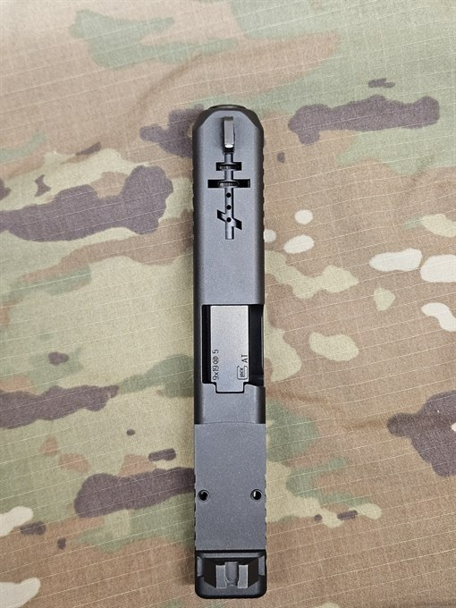
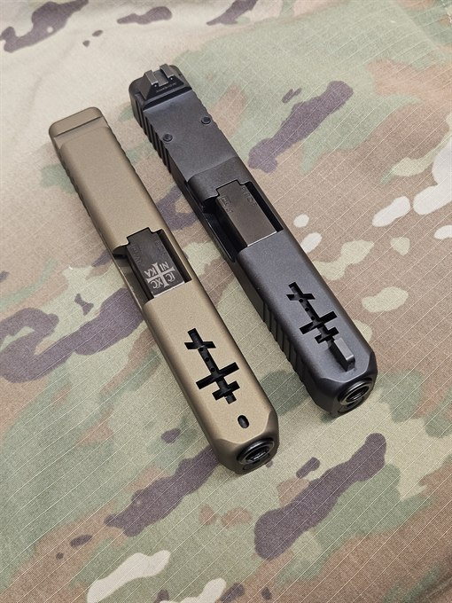
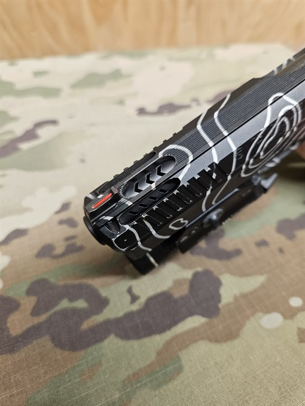
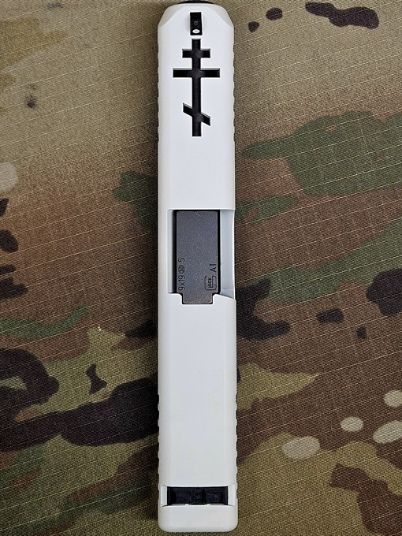

Please reach out for quoting or questions.

At NAS-T, one of our growing-in-popularity services is barrel porting and slide cutting. Barrel porting allows the firearm to vent expended gasses in a downward motion to help mitigate recoil. Part of the process is windowing your slide to allow these vented gasses a place to exit.
We can do custom designs and styles to fit your desired design or aesthetic. Feel free to reach out for a quote!



